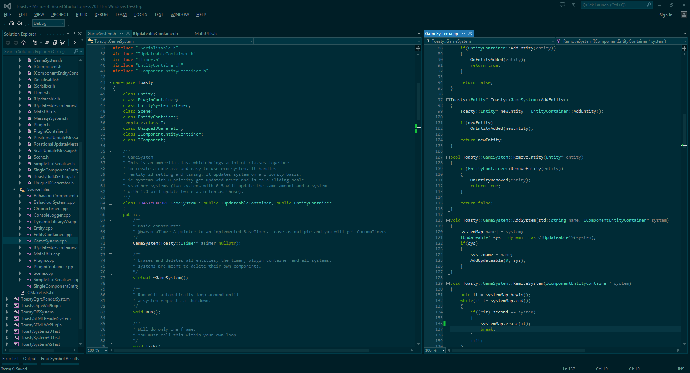
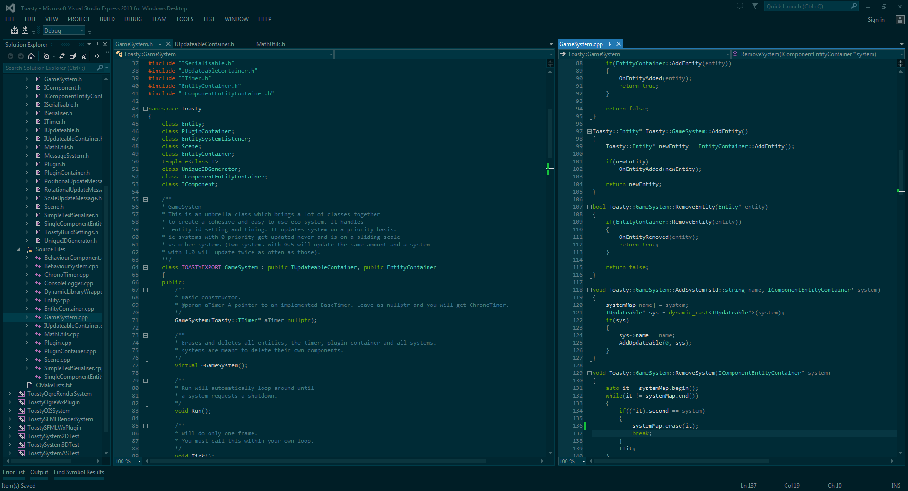

Toasty is a huge project, it is my attempt to re-create my own Unity engine that has the features I want! It uses a variety of my own libraries as well as a multitude of others. Toasty is split up into several projects including the Toasty framework and the Toasty Editor. The Toasty framework is some ECS base code that the editor and player will be built on.
At the moment it is going through a huge refactor but here are the features that I have:
- Basic ECS Framework
- Outboard component based systems
- Managed system updating depth
- Framework and Editor Plugin System
- Basic Serialisation System (Easily pluggable for different serialisation types)
- SFML Render System and Editor Plugin
- Basic View manipulation in editor
- Basic mouse based sprite manipulation in editor
- Sprite component
- Ogre Render System and Editor Plugin
- Basic View manipulation in editor
- Basic mouse based sprite manipulation in editor
- Mesh component
- Light component
- Box2D Physics System
- Bullet Physics System
- AngelScript Scripting System
- Basic File System Listening
- Basic Editor Networking
- Game Math Library
Here are a few really old editor images and click here for an old video!
 

{kind=link}
{kind=link}